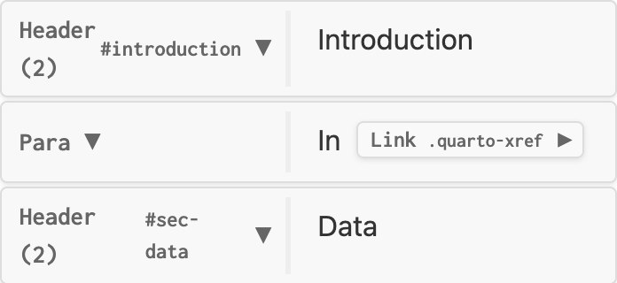

Extension Basics
Extending Quarto workshop @ posit::conf(2025)
Logistics
Extending Quarto: Welcome!
Wifi: Posit Conf 2025 Password: conf2025
Materials: pos.it/quarto-extend-conf25
Download exercises: https://github.com/posit-conf-2025/quarto-extend-exercises
Join the discord: #workshop-quarto-extend
Housekeeping
- Gender-neutral bathrooms:
- LL1 (Under escalators, to the right of the Learning Center)
- LL2 (Next Chicago A)
- Meditation/prayer room: LL2 - Chicago A
- Mother’s/lactation room: LL2 - Chicago B
- Red lanyards = No photos
- Code of Conduct: https://posit.co/code-of-conduct. Please review carefully. You can report Code of Conduct violations in person, by email, or by phone. Please see the policy linked above for contact information.
Breaks
Full schedule at: pos.it/quarto-extend-conf25
| Time | |
|---|---|
| 10:30 - 11:00 | Coffee Break |
| 12:30 - 13:30 | Lunch |
| 15:00 - 15:30 | Coffee Break |
| 17:00 | END |
Instructors
Teaching Assistants
Carlos
Elliot
Your turn: Introductions
Introduce yourself to your neighbor(s):
- Name
- Affiliation
- What you use Quarto for
04:00
How to get help?
Raise your color post-it note
“I’m stuck and need help!” “I’ve finished, and ready to move on.” Ask in Discord
Talk to us during breaks or your-turns
Goal: Reduce repetition
Within documents, across documents, across projects, and across people
Quarto Extensions: the mechanism for sharing across projects and people. This module
Extending Quarto: entrypoints for customizing Quarto regardless of whether you bundle them as an extension. Most useful:
- Partials and templates. Next module
- Filters and shortcodes. After lunch
Let’s jump in!
Quarto Extensions
Your turn: Install and explore an extension
Add the
quarto-revealjs-cleanextension to the project in01-basics/by running:Where did the file
_extension.ymlget installed?Compare
_extension.ymland the files alongside it to those in the source on GitHub. What’s the same? What’s different?Preview
slides.qmd. Then, edit to use theclean-revealjsformat, and preview.
Done? Browse https://m.canouil.dev/quarto-extensions for other extensions and explore their source.
Exercise: 01-basics/
10:00
What is a Quarto extension?
What is a Quarto extension?
“Each extension is defined by its _extension.yml file which contains the metadata about the extension as well as the what items it contributes when used.”
Possible contributes: formats, project, metadata, brand, shortcodes, filters, revealjs-plugins
Custom formats
quarto-revealjs-clean is an example of a custom format extension.
A way to share Quarto options:
_extensions/myformat/_extension.yml
User needs to specify format: myformat-html in their document or _quarto.yml.
Custom formats
Combine with other resources, for highly customized outputs:
Your turn: Create a custom format
Still in 01-basics/:
Edit
_extension.ymlto add a customhtmlformat that sets 2-3 of your favorite HTML options.Edit
slides.qmdto use your custom format, and preview.
Exercise: 01-basics/
08:00
Get boilerplate with quarto create extension
Extending Quarto
What happens when you render?
Inside the Pandoc step

.md → Reader → AST
Markdown is parsed into a representation called the Abstract Syntax Tree (AST)
AST → Filters → AST

Filters transform nodes in the AST
E.g. cross-references (Quarto), citations (Pandoc), and custom filters (extensions & you).
AST → Writer → .html
Writers convert the content to the desired output format.
AST → Writer → .html
Combined with boilerplate from template and partials.
A case study: Course notes
Notes that we want as slides (format: revealjs) and a document (format: html).
Title slide in every slide deck controlled by metadata
Partial
Special slide combines boilerplate with content.
Filter